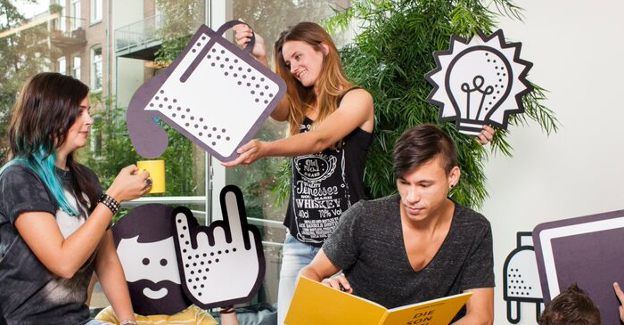

Algemene info
De visual designer ontwerpt de 'look, feel & touch' van een gebruiksvriendelijke, communicatieve en betekenisvolle interactieve toepassing. Als visual designer zorg je ervoor dat de website of mobiele app er goed uitziet en dat de vormgeving is afgestemd op de wensen van de klant en de achtergrond van de eindgebruiker. Je houdt de trends bij op het gebied van visueel ontwerp en typografie en adviseert opdrachtgevers over de grafische en communicatieve mogelijkheden van interactieve media.